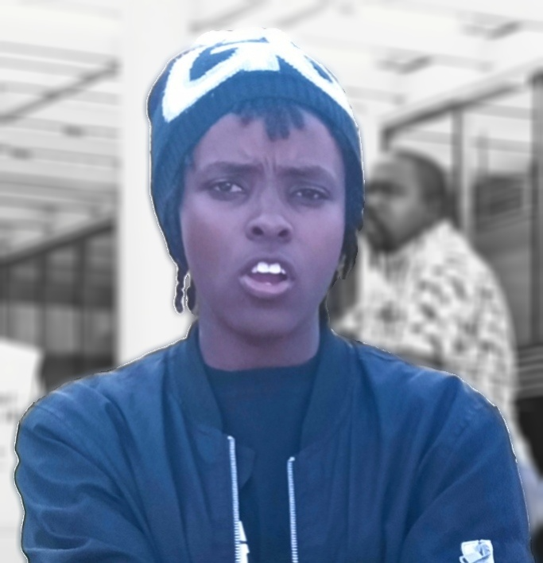

Personal Info
Phone : +254743540231
Email : njeraisha@gmail.com
Twitter : @JAishaN006
Technical Skills
- Programming Languages: HTML5, CSS3, JavaScript
- Basic Knowledge: Express Nodejs web framework
Skills
- Problem-solving skills with the ability to troubleshoot and debug code.
- Adept at translating design mockups into functional web pages.
- Enthusiastic learner who stays updated on current web development trends and technologies.
- Effective communicator and team player with excellent collaboration skills.
- Detail-oriented and committed to delivering high-quality work.
AISHA NJERI
A motivated junior web developer with a passion for creating efficient and user-friendly
websites. Eager to contribute coding skills, creative problem-solving, and a strong desire to learn and
grow within a dynamic team environment.
- 2018-2022
- Technical University of Mombasa
- 2014-2017
- Coulson Girls' Secondary School
- 2006-2013
- Gilgil Garrison Primary School
projects
Portfolio Website
- Designed and developed a personal portfolio website showcasing projects using HTML, CSS and
JavaScript.
- Implemented responsive design to ensure optimal user experience across various devices.
- Integrated interactive elements using JavaScript for enhanced user engagement.
To-Do List Web App
- Independently developed a to-do list application using HTML, CSS, and JavaScript.
- Implemented task management functionalities such as adding, editing, and deleting tasks.
- Utilized local storage to persist user data across sessions.
- Playing football
- Reading blogs
- Travelling